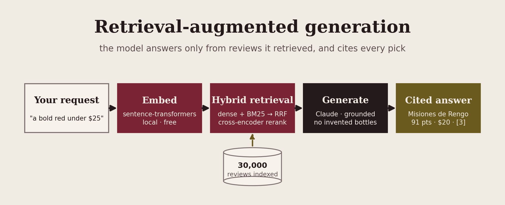

Retrieval-augmented generation over 30,000 Wine Enthusiast reviews
On 28 requests with limits in them, frozen before the run, plain hybrid search put a review that broke a stated limit in 217 of 280 top-ten slots. Claude Sonnet now extracts those limits into a validated JSON schema and they filter the corpus before ranking: 0 of 257 slots break one, at $0.05 and 2.4 s per request. You can run the search itself in your browser below.
Ask for "a bold red under $25 for a steak dinner" and the request goes through dense and
BM25 retrieval and a cross-encoder reranker, then to Claude, which may recommend only the
reviews it was handed and cites each with [n]. Against dense retrieval alone,
the reranked pipeline lifted nDCG@10 from 0.67 to 0.83 on the original
12 queries and from 0.59 to 0.76 on 30 new queries frozen before any
system ran on them.
eval/src/eval.py) and 30 held-out queries committed before their first run (eval/queries_v2.json). Relevance is a written rubric per query, with no human labels.eval/constraints/queries.json). Top-ten slots breaking a limit: 77.5% unfiltered, 0% with Sonnet extraction and filters first, 1.2% with Haiku.The upgrade, 2026-11-13
On 28 requests that state hard limits, frozen before anything ran on them, unfiltered hybrid search put a review that broke one of those limits in 217 of 280 top-ten slots (77.5%). With the limits extracted into a validated schema and applied before ranking, Sonnet's extraction left 0 of 257 and Haiku's 3 of 257.
The pipeline: src/constraints.py asks Claude for JSON matching a pydantic
Constraints schema (price range, minimum score, countries, provinces such as
Oregon or Bordeaux, grapes, color, and excluded countries, grapes and words). Code checks
types and ranges, then checks every place and grape against the index's own vocabulary;
a value the index does not hold ("Napa Valley" as a province) goes back to the model with
the error and the closest valid values, once. src/filtered.py then masks the
corpus before dense search, BM25 and the reranker see it. The answer key for each request
(eval/constraints/queries.json, commit 2aa5f69) is the set of filters a careful
reader would take from the sentence.
| System | Violating slots | Slots returned | Exact extraction | nDCG@10, 6 style requests | Cost per request |
|---|---|---|---|---|---|
| No filters (current app on the raw sentence) | 217 (77.5%) | 280 | n/a | 0.24 | $0 |
| Answer-key filters, applied after fusion (today's CLI flags) | 0 | 186 | n/a | 0.72 | $0 |
| Rules extractor, filters first | 0 | 257 | 27 of 28 | 0.87 | $0 |
| Sonnet 5.5 extraction, filters first | 0 | 257 | 27 of 28 | 0.87 | $0.053 |
| Haiku 5.5 extraction, filters first | 3 (1.2%) | 257 | 23 of 28 | 0.87 | $0.003 |
| Answer-key filters, first (ceiling) | 0 | 257 | n/a | 0.87 | $0 |
28 requests, k = 10, the same 30,000 reviews as the other benchmarks. A slot violates when
the review breaks any answer-key clause. Fewer than 280 slots come back when fewer than ten
reviews satisfy a request (5 requests; "an Italian red for less than fifteen dollars" has 3).
Relevance for nDCG is the answer key plus style words, so it overlaps with the violation
count; it is reported only for the 6 requests that carry style words. Cost is the
API-equivalent median reported by the Claude CLI; Sonnet extraction took 2.4 s median,
Haiku 3.0 s; all 56 replies validated on the first try. From
eval/constraints/summary.json.
Two findings beyond the headline. Applying correct filters after fusion, the way the
existing --max-price flag works, avoids violations but returns only 186 of
280 slots: 14 requests come back short because the 80-review shortlist was chosen before
the filter. And the regex extractor tied Sonnet. I wrote the rules and the 28 requests in
the same session, so the rules have seen this phrasing; Sonnet had not. Treat 27 of 28 for
the rules as an upper bound until a set written by someone else exists.
Try it
The same MiniLM model as the Python side, run by transformers.js on WebAssembly, over an
int8 index of 8,000 reviews sampled from the 30,000. Filters come from the rules extractor,
ported to JavaScript; on the 28 frozen requests and 7 test sentences it returns exactly
what the Python version does (35 of 35, eval/browser/rules_parity.json).
There is no BM25 or reranker here: this is dense search with filters.
Pressing Load downloads about 58 MB from this site: the ONNX runtime (28 MB), the quantized model (23 MB) and the index (5.4 MB). Nothing is sent anywhere, and your request never leaves the page.
Checked on 12 requests in headless Chromium (Apple M4, eval/browser/check_agreement.py):
the browser's top ten shared 8.8 of 10 reviews with the Python dense retriever on the same
8,000 rows on average (never fewer than 8), with the same first result on 10 of 12. Query
embedding took 7 ms and ranking 4 ms, median. The page made no request outside its own
server. One edit to the vendored transformers.min.js: GitHub's push protection
read the class name Mistral3ForConditionalGeneration as an API key, so that
string is written as two joined halves.
Error analysis
eval/constraints/exclusion_check.json). The answer key uses the same rule, so the violation count cannot see this.MCP
src/mcp_server.py serves two tools over stdio with the official
mcp SDK: search_wines, which takes a style query plus the same
filter fields and runs the filtered hybrid search, and parse_constraints, the
rules extractor. Filters go through the schema and vocabulary check, so an unknown country
comes back as an error with close matches instead of an empty list.
python eval/mcp_smoke.py starts the server and calls both
(eval/mcp_smoke.json): Oregon Pinot Noir under $25 found 16 matching reviews,
and countries: ["Narnia"] returned the error.
One recorded run
With a $25 price cap passed as a filter, the hybrid retriever and reranker returned four bottles, and Claude led with a Chilean Carmenère and explained why it passed over one of the four. Every bottle, score and price in the answer comes from a retrieved review.
The request
"a bold red under $25 for a steak dinner"
--max-price 25
The pick
"a juggernaut red that cries out for steak"
Set aside: the Soos Creek, as "a touch gentler than the bold profile you're after." From the run described in writeup.md.
The measurement
Each query has a written rubric: wine family or grape, country or region, price cap, descriptor words. A review counts as relevant if it meets every clause. The first 12 queries are mostly about style ("a crisp, mineral white to go with fresh oysters"). The 30 added on 4 November name more grapes and places ("a Mosel Riesling with a touch of sweetness") and were committed to the repo before any system ran on them. Pick a set and a metric to follow it through the pipeline.
eval/results.csv (12 queries)
and eval/summary.csv (30 queries). The other metrics are drawn faint behind the one you pick.| System | P@10 | Recall@10 | MRR | nDCG@10 |
|---|---|---|---|---|
| 12 queries, July set | ||||
| Dense (vector only) | 0.68 | 0.030 | 0.82 | 0.67 |
| Dense + BM25 (RRF) | 0.67 | 0.026 | 0.77 | 0.68 |
| + cross-encoder rerank | 0.82 | 0.035 | 0.92 | 0.83 |
| 30 held-out queries, frozen 4 November | ||||
| Dense (vector only) | 0.58 | 0.044 | 0.73 | 0.59 |
| Dense + BM25 (RRF) | 0.66 | 0.054 | 0.82 | 0.68 |
| + cross-encoder rerank | 0.75 | 0.068 | 0.87 | 0.76 |
With 12 queries the reranker's nDCG@10 gain over dense is +0.16, 95% bootstrap interval 0.07 to 0.27; with 30 it is +0.16, interval 0.06 to 0.27. Neither interval reaches zero. Recall@10 is low for every system because most rubrics match hundreds of reviews and ten results hold only ten.
These rows use exact dense search: every review's embedding is scored against the query,
so any rebuild of the index gives the same numbers. The app searches Chroma's HNSW index
instead, which is approximate and comes out different on every build, so for a few
queries it returns different neighbors. Rebuilt 20 times from the same embeddings
(eval/rebuild_spread.csv), the HNSW runs put dense MRR on the 12 queries
anywhere from 0.82 to 0.88 and hybrid nDCG@10 from 0.67 to 0.69; on the 30, hybrid nDCG@10
ranged from 0.678 to 0.685. The reranked rows moved by at most 0.0003. This page used to
show one such build (dense MRR 0.88, nDCG@10 0.69), and the fresh rebuild on 4 November
that gave hybrid P@10 0.675 and nDCG@10 0.689 was another.
Query by query
An average can hide a system that wins big on a few queries and loses on the rest. Each row is one query: the hollow square is dense search, the filled square the reranked pipeline, on nDCG@10. Rows are sorted by the change. Two queries score zero for both, and the error analysis below says why.
Dense Hybrid + rerank
Hover or focus a row for its numbers.
BM25 fusion
On the July set, fusing a BM25 keyword index into the dense ranking left precision flat and dropped MRR from 0.82 to 0.77: the first relevant wine landed lower. On the 30 new queries the same fusion raised MRR from 0.73 to 0.82 and nDCG@10 from 0.59 to 0.68. The new queries name grapes and places such as Grüner Veltliner, Mosel and Mendoza, exact words BM25 matches; the July queries mostly describe a style, where shared words point to the wrong kind of wine as often as the right one. So the July finding was a property of those queries, and the honest reading of both sets is that fusion depends on how people phrase requests, while the reranker helped on both.
Fusion can still promote a weak match. Reciprocal Rank Fusion rewards any review that
shows up in both lists, even far down them: a review ranked 61st in both outscores the
one dense search put first. The calculator uses the formula from src/hybrid.py
(k = 60, 80 candidates from each list in the benchmark).
Reciprocal Rank Fusion, as the code computes it
score = 1/(60 + dense rank) + 1/(60 + BM25 rank)
The cross-encoder (ms-marco-MiniLM-L-6-v2) reads the request
and each review together and re-scores the top fused candidates. It is also the slow
stage: its median of 145 ms is most of the 196 ms median for a whole query.
Error analysis
A miss is a wine in the reranked top ten that fails its query's rubric. Every top ten is
saved in eval/top10.json, and eval/error_analysis.py sorts each
miss by the first rubric clause it breaks. On the 30-query set there are 76; on the July
set, 22 of 120.
Wrong grape or color20 (7 queries) · 11 (5)
"a white Burgundy with hazelnut and minerality": first place went to a Russian River Valley Sauvignon Blanc.
Price in the sentence ignored19 (5) · 11 (2)
"a smooth, easy-drinking red under $15": all ten results cost more, led by a $29 Santa Barbara Syrah. P@10 is 0 for every system.
Wrong region or country17 (7) · 0
"an Oregon Pinot Noir under $40": seven of the ten were Californian, the first from Monterey.
Right wine, rubric says no16 (3) · 0
For "an Amarone" and "a Chianti Classico", most hits are exactly that, but the dataset files them as "Red Blend", so the grape clause fails. These count against all three systems.
Style words missing4 (3) · 0
A $32 Willamette Valley Pinot that fits the request except that its review never says earthy.
The price group is a design gap: price, country and grape filters exist, but only as CLI flags. Nothing reads "under $15" out of the sentence, and the benchmark runs with no flags, so the retriever ranks a $29 Syrah as the best smooth red. The fourth kind is the rubric's own error: 16 of 76 misses are wines a sommelier would accept, so all the 30-query scores are a little low.
eval/generation.py ran the full chain on 20 of the queries and checked every
answer in code: no [n] citation outside the six sources, no score that isn't
in them, and no dollar amount that isn't a source price, the guest's budget, or the
difference between the two (six amounts such as "$10 over your limit"). In the two runs
where retrieval found nothing that met the request, the answer said so in its first
line: "None of these six wines is under $15. The cheapest is $19." Twenty answers is a
small sample, and these checks catch invented numbers and say nothing about whether a pick is well argued.
Cost and latency
Retrieval was timed on an Apple M4 (embedding and reranker on the MPS GPU), replaying the
default path (60 fused candidates, top 6) for all 42 queries three times after a warm-up
pass: 126 timings. Generation is 20 runs through the Claude CLI on 4 November, the same
way src/llm.py calls it, with --output-format json added so the CLI
reports time, tokens and cost. Cost is the API-equivalent figure the CLI reports; on a
Claude subscription nothing is billed per call.
| Stage | Median | p95 | n |
|---|---|---|---|
| Embed the request (MiniLM) | 6.7 ms | 8.7 ms | 126 |
| Dense search (Chroma) | 2.8 ms | 36.2 ms | 126 |
| BM25 over 30,000 reviews | 39.5 ms | 52.3 ms | 126 |
| Cross-encoder rerank, 60 pairs | 145 ms | 179 ms | 126 |
| Retrieval total | 196 ms | 257 ms | 126 |
| Generation, Claude CLI | 8.3 s | 11.2 s | 20 |
| Generation cost, API-equivalent | $0.132 | $0.136 | 20 |
The slowest generation took 26.6 seconds, on the under-$15 request where nothing fit. The
CLI's default model on that day was claude-opus-5-5. Each call carried about
28,000 input tokens, while the request, six reviews and instructions come to 450 to 620
words: nearly all the cost is the CLI's own context, which a direct API call with
ANTHROPIC_API_KEY would not send. That path was not measured. Raw numbers:
eval/latency_retrieval.csv, eval/generation_runs.jsonl.
The grounding
The system prompt tells Claude to recommend only from the retrieved reviews, to cite each
pick by its [n] index, and to say so if none of them fit. Price, country,
grape and minimum score can go into the vector query as metadata filters, so a $25 cap
never spends a retrieval slot on an $80 bottle. The answer prints with the reviews it
cites underneath.

Limitations
Relevance comes from keyword-and-metadata rules, with no human judges. A rule that
rewards grape and price favors retrievers that match on grape and price, and the error
analysis shows the rules also reject some right answers. The rules are in
src/eval.py and eval/queries_v2.json, the comparison is fair
between systems, and the absolute numbers would need a hand-labeled set to mean more.
The 30 new queries were written after the July results were known, so they are held
out from the systems but not from the person who wrote them.
The index holds the 30,000 highest-scored reviews (--limit 30000), all rated
91 or above, not all 129,971; --all indexes everything. The reviews come from
one magazine and carry its coverage gaps.
The constrained set is 28 requests, and I wrote both its answer key and the regex
extractor, so the rules' 27 of 28 is not a fair test of them. Exclusions are substring
rules ("oak" removes "unoaked"). The extracted filters are scored for the retriever only;
the Claude CLI generation step and src/cli.py still take filters from flags.
No person has labeled any of it; eval/constraints/labeling_sheet.csv lists
the Sonnet top ten for every request with blank columns for a reader's verdict.
Next
eval/constraints/labeling_sheet.csv to get relevance judgments that are not the answer key restated.src/cli.py and the generation step, falling back to the rules when no model is available.How it was built
winemag-data-130k-v2 Wine Enthusiast dataset, de-duplicated; 30,000 reviews indexed by defaultall-MiniLM-L6-v2 (384 dimensions) via sentence-transformers, on Apple MPS, CUDA or CPUrank-bm25), fused with Reciprocal Rank Fusion, k = 60ms-marco-MiniLM-L-6-v2 over the fused shortlist (60 candidates by default, 80 in the benchmark)src/constraints.py (pydantic schema, vocabulary check, one repair; LLM and regex extractors) and src/filtered.py (mask before dense, BM25 and rerank)assets/ai/wine-search.jssrc/mcp_server.py, stdio, search_wines and parse_constraintsANTHROPIC_API_KEY switches to the APIpython -m src.eval (12 queries) and python eval/run_eval.py (12 + 30, per query); eval/latency.py, eval/generation.py, eval/error_analysis.py